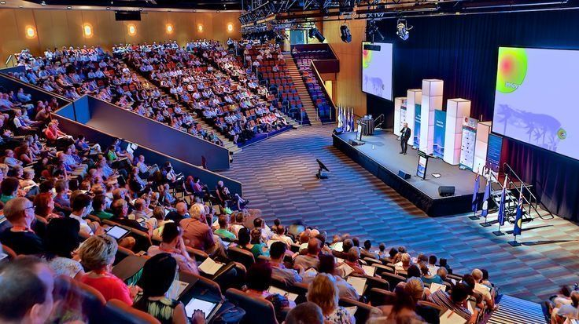

Our History
TechCon began in 2019 with a vision to create and elevate a vibrant community for technology enthusiasts in Kenya. What started as a small meetup of local innovators quickly grew into a nationally recognized conference, attracting thousand of attendees and prominent speakers from around the globe. Over the years, TechCon has been at the forefront of showcasing groundbreaking technologies and fostering collaborative discussions that have shaped the futrue of various industries
Mission
At TechCon, our mission is to inspire, educate and connect. We strive to provide a platform where cutting-edge ideas are shared diverse perspectives are celebrated, and meaningful connections are forged. We believe in the power of technology to drive positive change and aim to empower individuals and organizations to harness this power for a better tomorrow. Through our carefully curated sessions and interactive workshops, we aim to equip attendees with the knowledge and tools needed to thrive in an ever-evolving technological landscape.

Notable Past Speakers
Over the years, TechCon has hosted industry leaders such as Anya Mama, Alsowilson and Martha. These experts have inspired thousands through their groundbreaking work

Mrs Martha is a renowned professor in AI and Machine learning

Ms. Anya Mama is a cybersecurity specialist with over 8 years of experience in the field.

Mr. Alsowilson is a leading expert in Software Development and has been a keynote speaker at various international conferences.